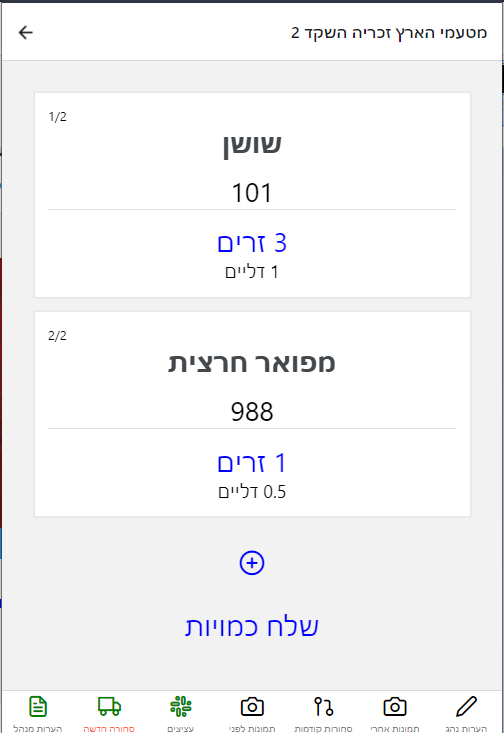

על מנת שנהג יוכל לדווח באופן תקין, היה צורך לעשות ממשק מהיר ונוח השומר מידע שעדיין לא נשלח
לאחר שיקולים של אילוצים וזמן, החלטתי לבנות את הממשק בעזרת React Native המאפשר לכתוב בשפה שאני מכיר, וגם נותן כלים כמו ASYNC STORAGE לשמירת המידע בטלפון